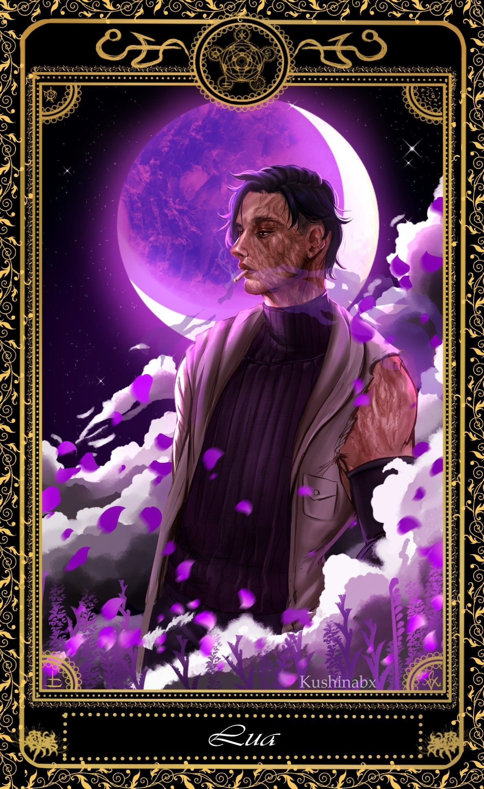
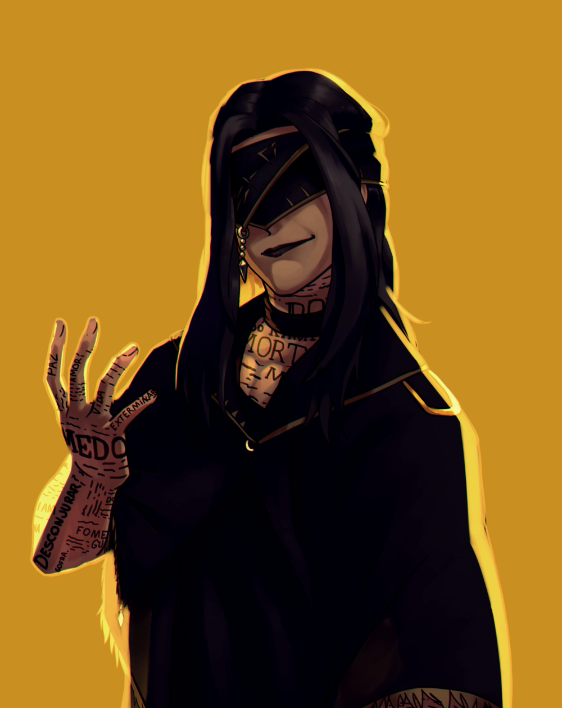
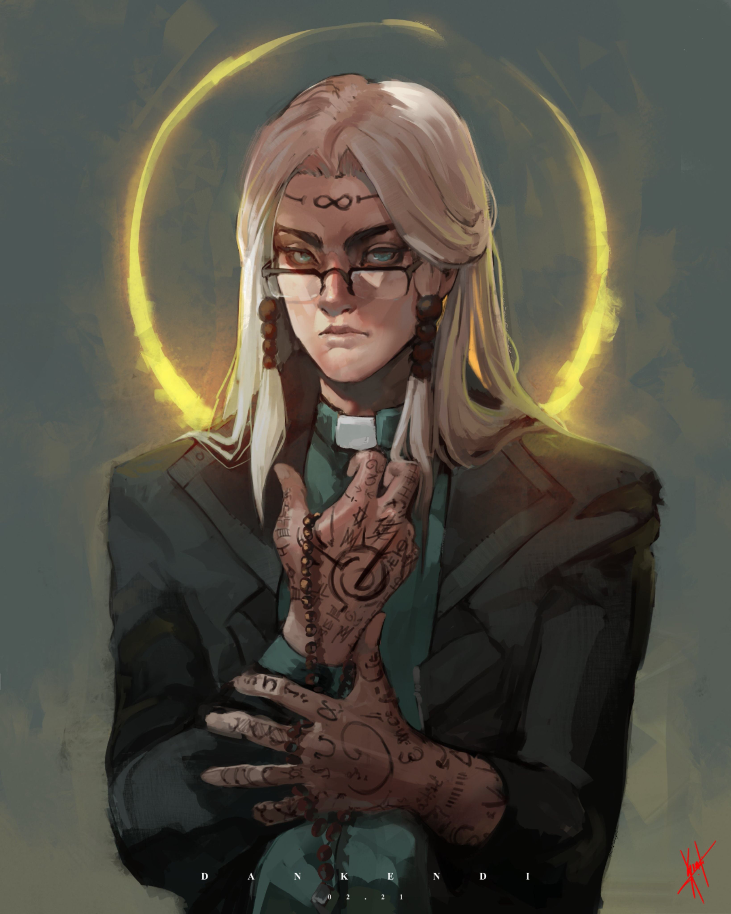
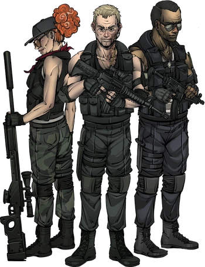
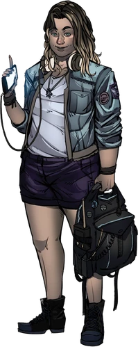
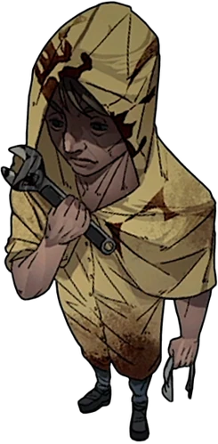

CRIANDO O SEU AGENTE
╬╬═════════❮◆❯═════════╬╬
Cada jogador de ORDEM PARANORMAL RPG cria e interpreta um personagem. Esses personagens
serão agentes da Ordem da Realidade, que lutam contra os perigos do Outro Lado e protegem a
vida como conhecemos.
Este capitulo apresenta todas as regras para criação de seu personagem, incluindo um
pesso a passo para facilitar esse processo. Criar um personagem é uma das partes mais
divertidas do jogo. Para fazer isso, siga os passos abaixo.
╬╬══════════════════════════❮◆❯═════════════════════════╬╬

Crie um conceito:
O primeiro passo é ter uma ideia geral sobre quem você vai interpretar. Busque referências de
personagens interessantes para tramas de investigação e tente descrever o conceito em uma frase
curta. Algumas perguntas podem ajudá-lo nesse processo:
Qual o nome do seu personagem?
O que ele fazia antes de encontrar o paranormal e entrar para a Ordem? De acordo com o mestre,
você também pode criar um personagem que
ainda não conhece o Outro Lado ou que ainda não é um agente.

ATRIBUTOS
Quando você cria um personagem, todos os seus atributos começam em 1 e você recebe 4 pontos para
distribuir entre eles como quiser. Você também pode reduzir um atributo para O para receber 1
ponto adicional. O valor máximo inicial que você pode ter em cada atributo é 3.
Sempre que você faz um teste, rola uma quantidade de dados de vinte faces igual ao valor do
atributo envolvido. Se você tem Força 3, por exemplo rola três dados em testes de Força e usa o
melhor resultado — isso é anotado como 3d20. Se você tem um atributo 0, rola dois dados em
testes
daquele atributo, mas usa o pior resultado.
╬╬═════════❮◆❯═════════╬╬
ORIGENS:
O que seu personagem fazia antes de se envolver com o paranormal e ingressar na
Ordem da Realidade? A origem representa como a vida pregressa influencia sua carreira de
investigador. Escolha uma origem que se encaixe com o conceito de seu personagem ou role 2d20 e
consulte a TABELA 1.1 para determinar uma origem
aleatoriamente. Ao escolher uma origem, você recebe duas perícias treinadas e um poder da
origem.
╬╬═════════❮◆❯═════════╬╬
-ACADEMICO
-AGENTE DE SAUDE
-AMNESICO
-ARTISTA
-ATLETA
-CHEFE
-CRIMINOSO
-CULTISTA ARREPENDIDO
-DESGARRADO
-ENGENHEIRO
-EXECULTIVO
-MAGNATA
-MERCENARIO
-MILITAR
-OPERARIO
-TEORICO DA CONSPIRAÇÃO
-T.I.
-TRABALHADOR RURAL
TRAMBIQUEIRO
UNIVERSITARIO
VITIMA

CLASSES
Sua classe indica o treinamento que você recebeu na Ordem para enfrentar os perigos do Outro
Lado. Em termos de jogo, é a sua característica mais importante, pois define o que você faz e
qual é o seu papel no grupo de investigadores.
ORDEM PARANORMAL RPG contém três classes, que
representam os principais arquétipos de heróis em histórias de terror e suspense.
╬╬═════════❮◆❯═════════╬╬

COMBATENTE
Treinado para lutar com todo tipo de armas, e com a força e a coragem para encarar os perigos de
frente, É o tipo de agente que prefere abordagens mais diretas e costuma atirar primeiro
e perguntar depois.
╬╬═════════❮◆❯═════════╬╬

ESPECIALISTA
Um agente que confia mais em esperteza do que em força bruta. Um especialista se vale de
conhecimento técnico, raciocínio rápido ou mesmo lábia para resolver mistérios e enfrentar o
paranormal.
Cientistas, inventores, pesquisadores e técnicos de vários tipos são exemplos de especialistas,
que são tão variados quanto as áreas do conhecimento e da tecnologia.
Alguns ainda preferem estudar engenharia social e se tornam excelentes espiões infiltrados, ou
mesmo estudam técnicas especiais de combate como artes marciais e tiro a distância, aliando
conhecimento técnico e habilidade.
O que une todos os especialistas é sua incrível capacidade de aprender e improvisar usando seu
intelecto e conhecimento avançado, que pode tirar o grupo todo dos mais diversos tipos de
enrascadas.
ESPECIALISTAS FAMOSOS: Aaron, Arthur Cervero, Rubens Naluti, Elizabeth Webber, Samuel Norte,
Chizue Akechi.
╬╬═════════❮◆❯═════════╬╬
